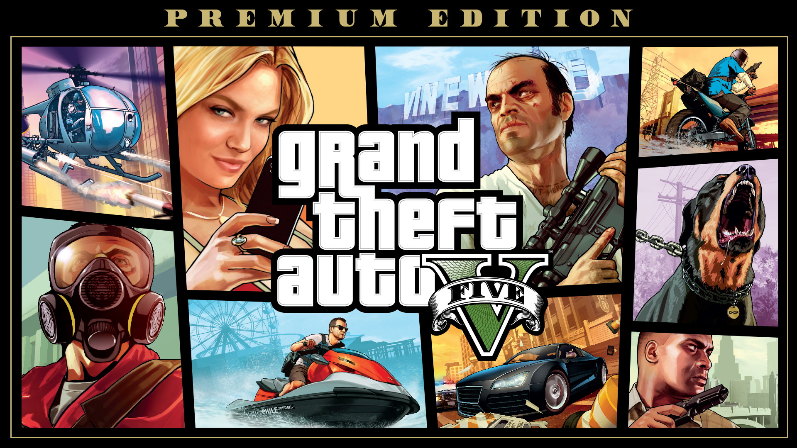
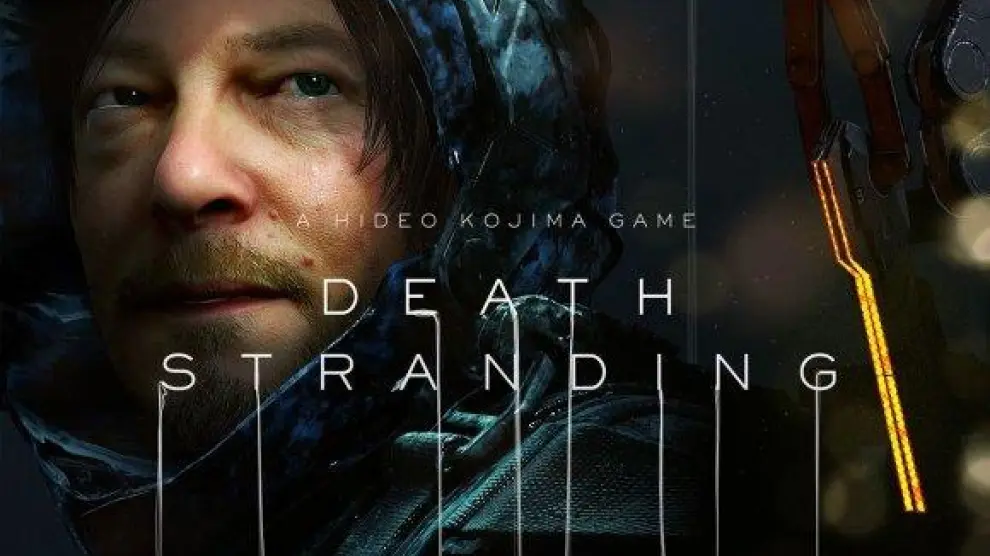

"Red Dead Redemption 2"

¿Qué podría decir sobre la más reciente obra de Rockstar Games que no sepamos todos ya? Tras ocho años de desarrollo, la compañía de Nueva York nos ha entregado esta magnífica aventura, con una historia cautivadora, unos personajes tan reales que acabas por conocerlos casi como si fueran tu familia, y probablemente el que sea el mundo abierto mejor conseguido hasta la fecha en toda la historia de los videojuegos.
Sobre este último aspecto se podrían decir muchas cosas, pero me gustaría destacar el asombroso detalle con el que han sabido recrear los diversos ecosistemas naturales que recorres durante tu aventura y las relaciones tróficas entre cada planta y animal. Los chicos de la gran R nos han brindado un trabajo tan sumamente conseguido en ese aspecto que te puedes cruzar con escenas dignas de los mejores documentales de naturaleza, como aves rapaces atrapando a sus presas en tierra y agua o manadas de lobos peleando contra osos por el derecho a devorar el cadáver de un uapití.
Una auténtica carta de amor a lo mejor del cine western crepuscular con una jugabilidad tan lograda e inmersiva que consigue que te sientas en la piel de uno de los últimos bandidos que cabalgaron por el salvaje oeste a través de una Norteamérica en constante y rápida modernización que quería dejar atrás uno de los capítulos más sangrientos de su historia.
Mención especial al apartado de sonido, a la sabiamente escogida banda sonora, y al excelente trabajo de actores como Roger Clark en el papel de Arthur Morgan. Sin las magníficas interpretaciones de todos los miembros de la banda de Van Der Linde, el impacto de la historia no habría sido el mismo.
Por último, quiero expresar mi infinito pesar por la ausencia de DLCs para el modo historia. Ojalá R* escuche mis plegarias y termine por desarrollar un Undead Nightmare 2. Pocas cosas me harían más feliz.
Más información"Grand Theft Auto V"
Tenía 7 años cuando salió, y desde que supe de su existencia, lo quería tener. Siempre me han gustado los juegos de coches, y este tiene una increíble variedad de ellos. No podía jugarlo porque no tenía ninguna consola compatible, y además mis papás no me dejaban jugarlo (aun no, pero no tienen que saber que hay cosas inapropiadas que de todas formas no hago).
Lo compré en Navidad, y es una MARAVILLA. La historia es buena. Muy buena, parece película. Te encariñas con los personajes. Yo, quizá porque soy sentimental, me encariñé mucho con todos los personajes, y principalmente con Franklin porque es como el más noble o humilde. Es un simulador de vida real. Puedes jugar golf, tenis, a tirar dardos... puedes lanzarte de paracaídas, manejar TODOS los tipos de vehículos que hay, convivir con personas... y esto solo es el modo historia.
El online no me gusta, pero sé que tiene también bastantes cosas. Tiene físicas muy buenas... tal vez el GTA IV tenga mejores físicas, pero este de todas formas es maravilloso. Los gráficos son una preciosura, más considerando que es un juego del 2013. Puedes hacer cosas graciosas, divertidas, emocionantes, y hasta cosas sexuales. Bueno, es un simulador de la vida (así lo considero yo) y pues eso es parte de la vida, ¿no?
En fin, no tengo más palabras. Vale la pena comprarlo, vale la pena cada maldito centavo que pagarás por él. Probablemente hoy ya todos lo tengan, pero si piensas comprártelo, no lo dudes. :)
Más información"Death Stranding"
El juego es innovador, tiene lindos paisajes, una música sonora magnífica. Como he leído en muchos comentarios negativos de él: "es aburrido porque tienes que caminar de lado a lado". Amigo, ese es el brillo del juego: tomarte el tiempo y completar las misiones. Es muy obvio (¡repartidor Sam!). En fin, no es un juego apto para todos.
Si eres de la vieja escuela, de los que disfrutan avanzar y engancharse en una historia genial y emotiva, digna de Kojima, este juego es para ti. Pero si eres del tipo de jugador que está acostumbrado a juegos sin trasfondo y repetitivos, es mejor que no lo pruebes. El juego no es digno de ti 😅😁. Todas las horas y años de programadores trabajando no son para cualquiera.
Debemos entender también que es el primer proyecto solitario de Kojima Productions, y la verdad, no me arrepiento de nada. Era más de lo que esperaba. Es un juego de mundo abierto donde un pequeño error puede matar a miles de personas, y donde los BB son importantes para la humanidad.
En realidad, lo genial del juego es su historia. Avanzar para ir descubriendo los rompecabezas. Vale la pena más que obvio, pero solo si eres un jugador respetable.
Más información